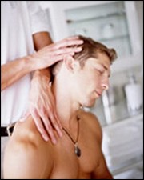
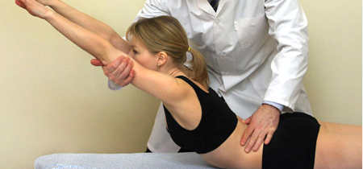
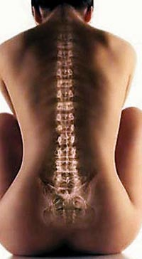

The post-isometric relaxation technique begins by placing the muscle in a stretched position. Then an isometric contraction is exerted against minimal resistance. Relaxation and then gentle stretch follow as the muscle releases. This technique was applied to tight, tender muscles that are commonly associated with musculoskeletal pain.

The method produced immediate pain relief in 94%, lasting pain relief in 63%, as well as lasting relief of point tenderness in 23% of the sites treated. Pain was relieved in both the muscle itself and at tender insertion points. The treatment of muscular pathologies is one of the most difficult challenges for healthcare practitioners. The difficulties that health-care profession face is due to the fact that no physical therapy equipment or muscular relaxation and anti-inflammatory medication can cause energy balance within pathologically hypertonic muscles.

Post isometric relaxation (PIR) techniques consist of isometric tension for 15-25 seconds following by passive stretching. The idea of PIR is such that at the time of isometric constriction unaffected parts of the same muscle stretch pathologically affected parts. Post isometric stretching stimulates Golgi organ, which in turn additionally relax the affected muscle. This very simple method, along with trigger points therapy, muscular mobilization and fascia release has significant healing power. I would also like to point out that all methods that I mentioned above are equally important in treatment of muscular pathologies and must be part of comprehensive treatment. RIP methods have many possible variations that will affect the results. For example, the muscle length at starting position; the effort of the client or therapist; the duration of the contraction; whether the contraction is pulsed or single; the number of repetitions of the contraction; whether the position changes with each repetition, i.e. moving to tissue tension; the direction of effort, i.e. whether it is an eccentric or concentric contraction; client breathing and eye movements in the direction of the force; type of resistance, i.e. gravity, therapist or immovable object. These variables need to be combined and controlled depending on the particular needs of the case.
